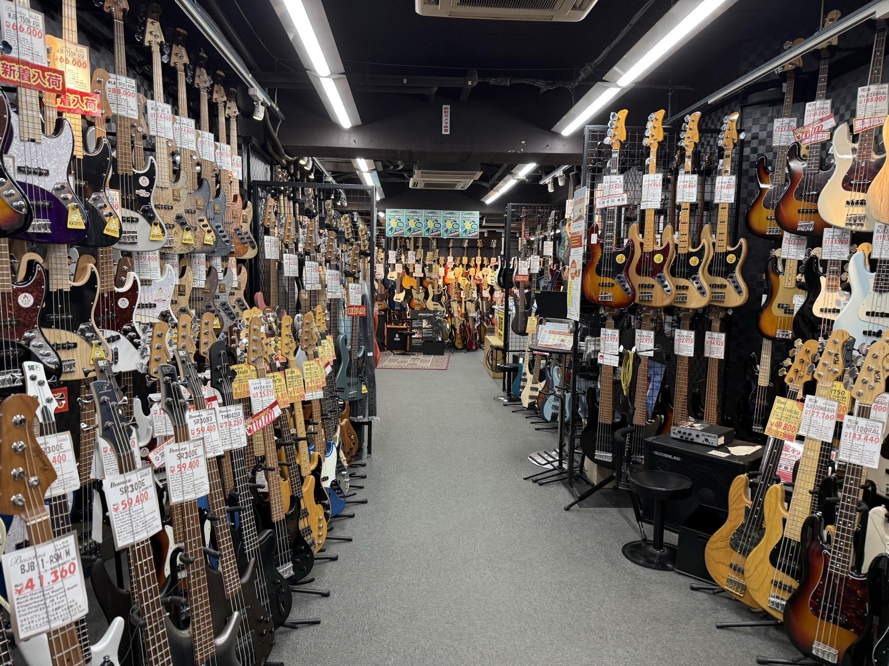
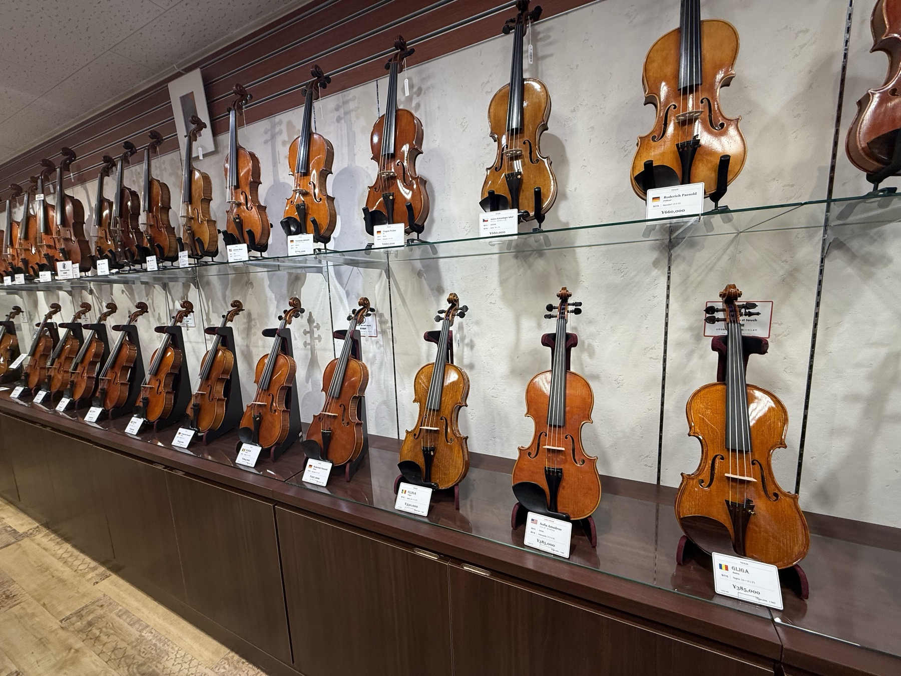

While wandering around Ochanomizu, I stumbled upon something unexpected: an entire street lined with musical instrument shops.
Not one or two. Around fifty.
Guitars everywhere. Electric guitars, acoustic guitars, basses, vintage instruments, and shops dedicated to instruments I hadn't even thought about.

My first question was: Why are they all here?
Wouldn't it make more sense for these stores to spread out across Tokyo instead of competing with one another on the same street?
As it turns out, the answer has a lot to do with the neighborhood's history.
Ochanomizu has long been a university district. Music shops initially served students, and the market expanded after World War II as Western instruments became more accessible. Later, the popularity of rock and folk music helped turn the area into a destination for musicians.
But what interested me most was the economics behind it.
Having dozens of competitors next door might sound like a terrible business strategy. Yet together, these shops create something none of them could offer individually: an entire neighborhood dedicated to music.
There's actually an economic concept for this: agglomeration economies, or the benefits businesses gain from clustering together.
Think about it. If you're looking to buy a $2,000 guitar, would you travel across Tokyo just to visit one store? Maybe. But what if you could visit a dozen shops in one afternoon, try different guitars, compare their sounds and prices, and talk to people who really know their instruments?
Suddenly, the trip becomes much more worthwhile. And the shops benefit, too.
Rather than every store trying to sell everything, they can specialize.
One might focus on vintage guitars, another on basses, another on violins or percussion instruments. Together, they offer a much wider selection than any single store could provide.

In other words, the competition itself becomes part of the attraction.
I went for a walk, found a street full of guitars, and somehow ended up learning about economics and Japanese history.
A pretty typical afternoon of chasing curiosity.
Loading comments…